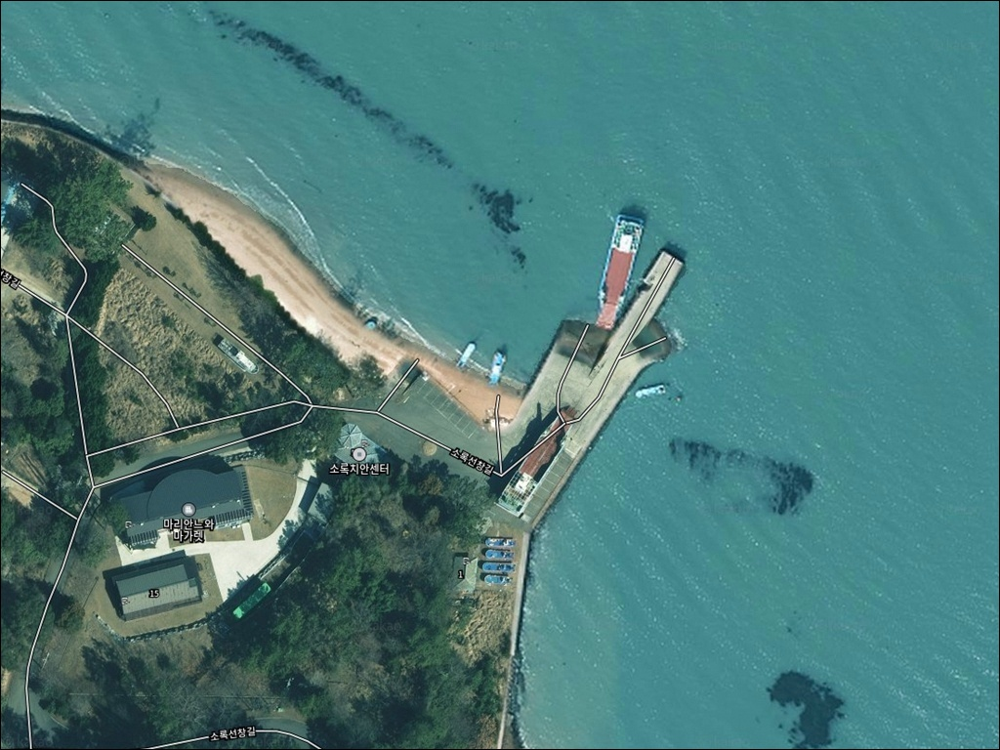
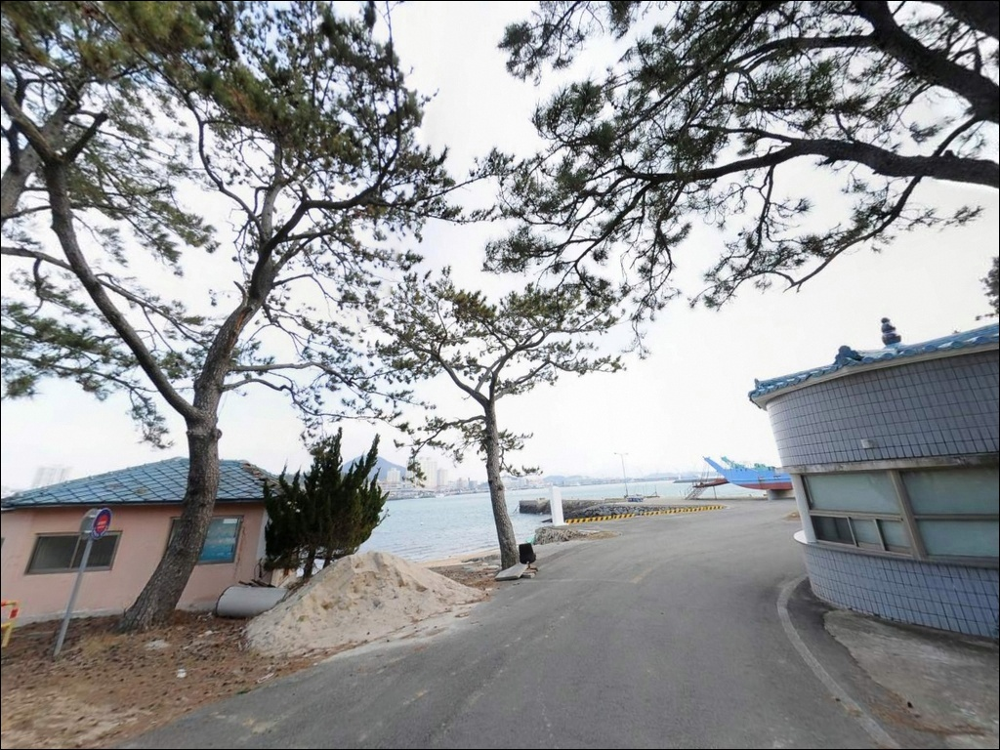
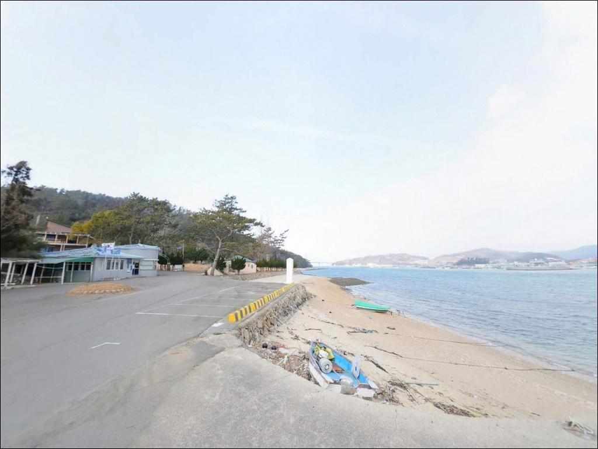
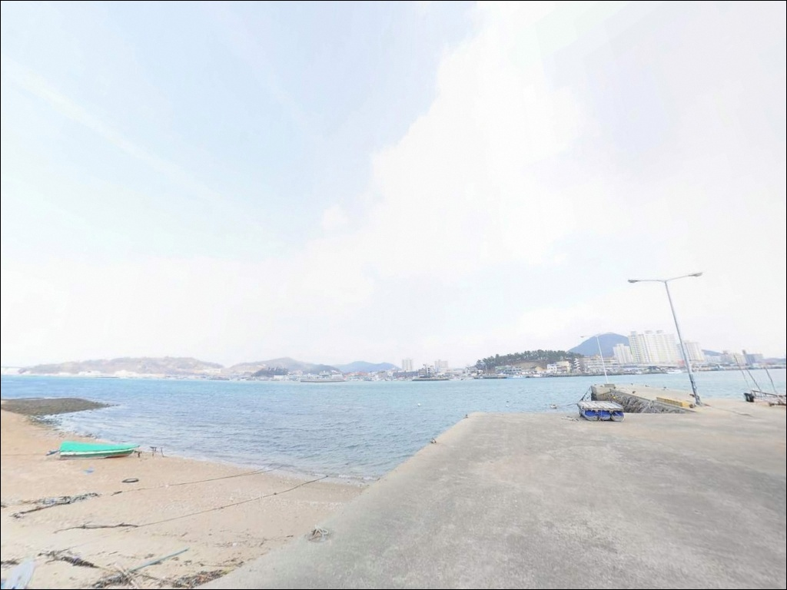
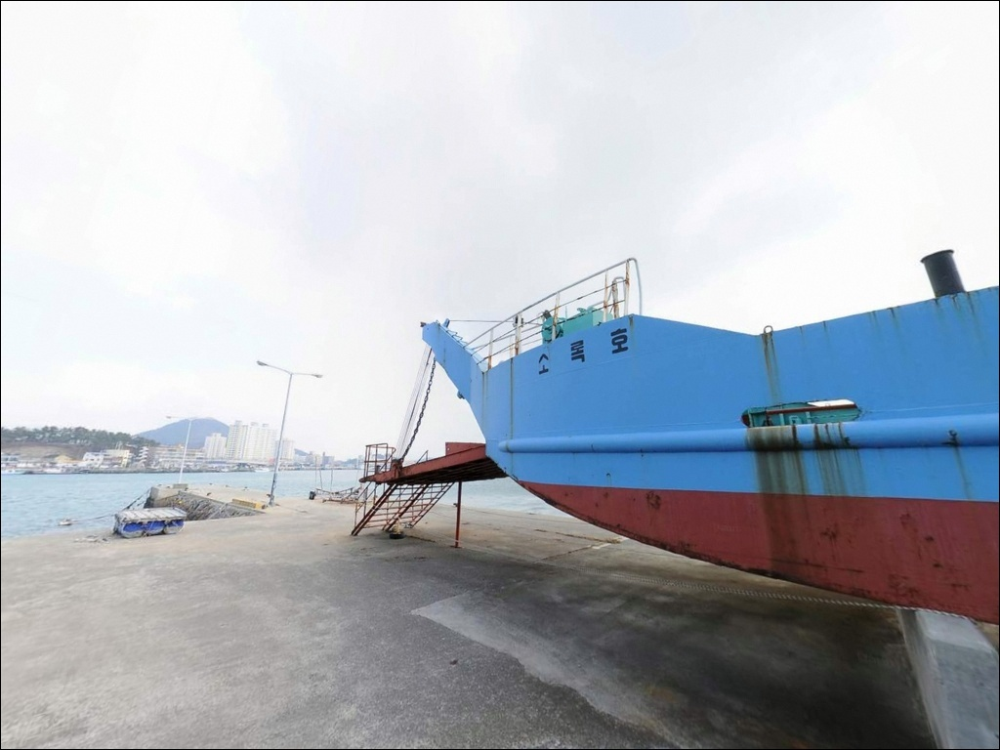
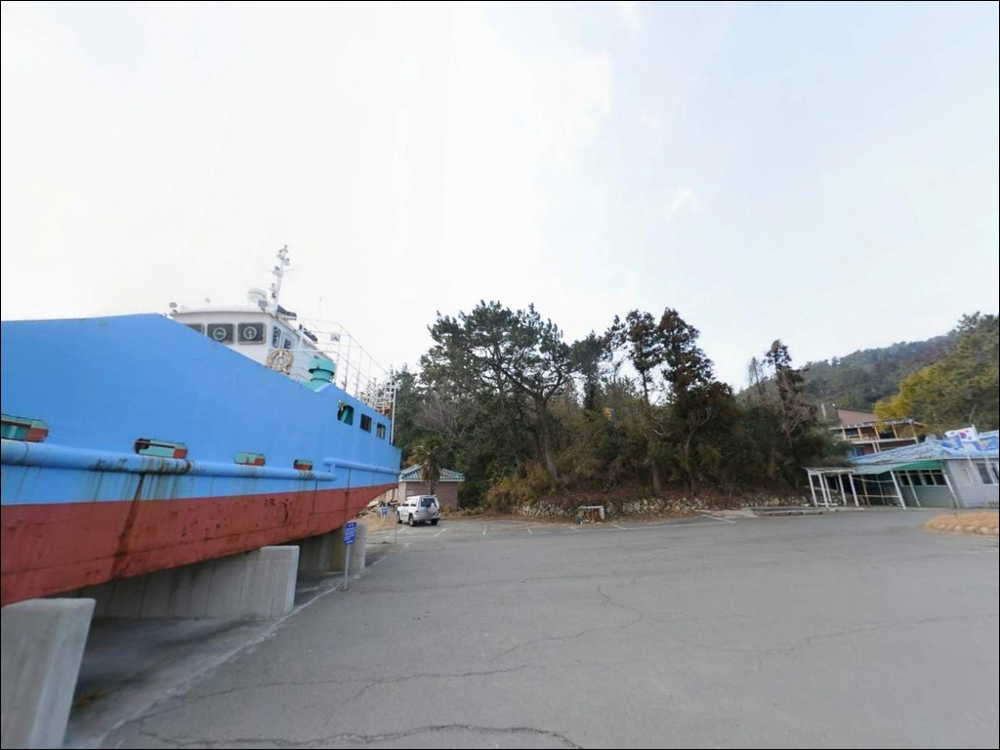
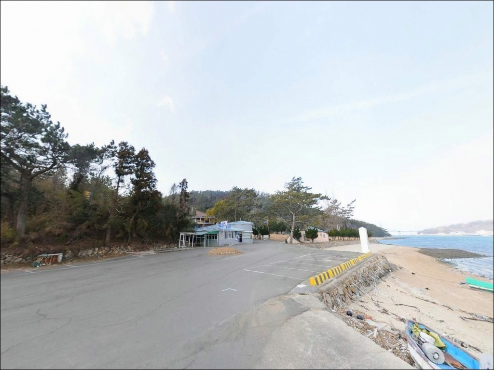
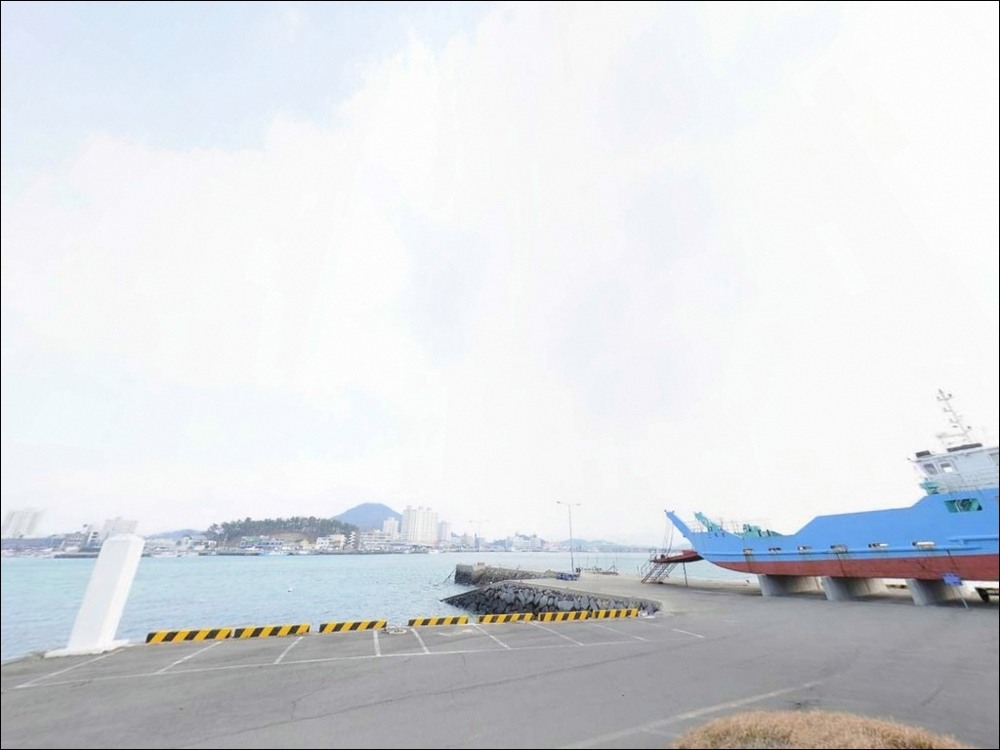
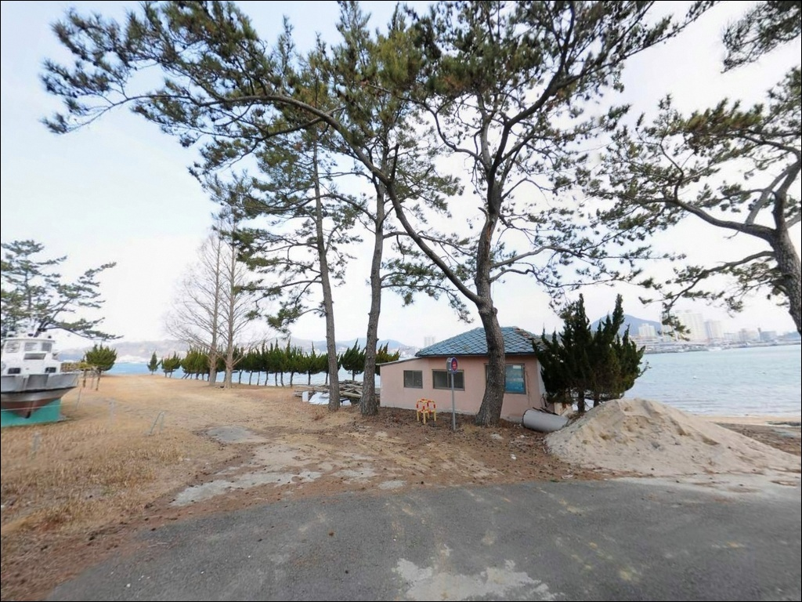

이 페이지에는 광고(제휴 링크 포함)가 있으며, 광고 링크를 통해 구매하면 운영자가 판매 수익 또는 수수료를 받을 수 있습니다. 포인트 사진: 카카오맵 스카이뷰·로드뷰. 이 페이지의 지도·사진 이미지는 카카오맵의 실제 서비스 이미지와 다를 수 있습니다.

소록도선착장
전남 고흥군 도양읍 소록리 3-8
소록도는 일반 낚시 포인트와 달리
방문 가능 시간이 정해진 특수 구역입니다.
개방 시간 이후에 도착하면
낚시를 시작조차 못하고 발걸음을 돌려야 합니다.
출조 계획을 세우기 전에
현지 개방 여부를 먼저 확인하는 것이
이 포인트에서 가장 먼저 해야 할 일입니다.
소록대교를 건너 섬 북쪽 해안에 자리한
소록도선착장은 녹동항과 마주보는 수로 구조로,
두 지형 사이 물골 조류가 상시 흐르는
찌낚시와 에깅 가능 포인트입니다.
전국 단위 낚시대회가 열리는 녹동항과
동일한 해역 조건을 공유하는 구조입니다.
이 글은 소록도선착장의 진입 조건,
수로 지형 기반 낚시 여건,
차박 대안 동선에 집중합니다.
조황 단정이나 어종 보장은
이 글의 범위에 포함되지 않습니다.

소록도는 국도 27호선 소록대교를 통해
차량 진입이 가능합니다.
왕복 2차선 교량 구조로,
승용차와 소형 SUV 기준으로
진입에 큰 어려움은 없습니다.
교량을 건넌 뒤 섬 내부 도로를 따라
북측 해안 방향으로 이동하면 선착장에 닿습니다.
섬 내부 도로는 마을 구간을 포함하며,
일부 구간에서 차량 교행이 제한됩니다.
대형 차량이라면 출발 전
위성지도로 진입로 폭을 미리 확인하는 편이 안전합니다.
선착장 주변에는 공터형 주차 공간과
도로변 여유 공간이 분산되어 있어
소형~중형 차량 기준 주차는 가능한 편입니다.
회차 공간은 선착장 입구 인근에서 확보됩니다.
가장 먼저 확인해야 할 사항은
방문 가능 여부와 개방 시간입니다.
소록도는 국립소록도병원 소관 국유지로,
지정 개방 시간 외에는
외부인과 차량의 체류가 제한됩니다.
출발 전 현지 상황을 반드시 확인하고 나서는 것이
이 포인트 방문의 첫 번째 조건입니다.

소록도선착장은 차박 베이스로 삼기 어려운 포인트입니다.
섬 전체가 국유지 특수 구역으로 지정되어 있어
야간 차박과 야간 낚시는 현실적으로 불가합니다.
이 포인트는 당일 낚시 전용으로 접근하는 것이
맞는 방식입니다.
병원 시설과 관련 주거 구역이 밀집한 환경으로
생활 조명은 일정 수준 확보되어 있습니다.
다만 소록도는 한센병 환자와 주민이 생활하는
역사적 공간이기도 합니다.
소음, 조명, 쓰레기 처리에서
일반 낚시 포인트보다
훨씬 조심스럽게 행동하는 것이 기본 매너입니다.
하룻밤 머무는 차박을 계획하고 있다면
소록대교를 건너 녹동항 일대를 거점으로 삼는 방식이
현실적입니다.
녹동항 공영주차장 일대는
접근성과 편의성 모두 우수한 편이며,
소록도선착장에서 교량 하나 거리입니다.

소록도 섬 내에는 편의점, 식당, 주유소가 없습니다.
낚시 소품, 식수, 식사, 연료 모두
출발 전 또는 녹동항에서 해결해야 합니다.
완전 자급 체제로 진입하는 것이
현실적인 준비 방식입니다.
소록대교를 건너면 약 3km 거리에
녹동항 상권이 집중되어 있습니다.
낚시점, 대형 마트, 식당, 편의점,
수협 어판장과 건어물 상점가가 모여 있어
부족한 소품과 식사를 한 번에 해결할 수 있습니다.
특히 녹동장어거리는 출조 전후 식사 동선으로
자주 활용됩니다.
응급 상황을 대비해 출발 전
연료·비상약품·수분 준비를 철저히 갖추는 것이 기본입니다.
국립소록도병원이 섬 내에 위치하고 있으나
일반 응급 목적의 이용 가능 여부는
사전에 확인하는 편이 안전합니다.

소록도선착장 방문에서 준비해야 할 두 가지는
명확합니다.
첫째는 섬 개방 시간 확인이고,
둘째는 물때 확인입니다.
개방 시간 안에 들어가더라도
조류가 너무 세거나 정조 시간과 어긋나면
채비 컨트롤이 어려워지는 수로형 포인트입니다.
바다타임에서 도양읍 기준 물때를 확인하고
입장 시각을 맞추는 것이 기본 전략입니다.
수로 조류가 강한 구간에서는
낙수 위험이 높은 편입니다.
구명조끼 착용은 필수이며,
빠른 조류 환경에서는 채비 손실이 잦으니
여분 채비를 넉넉하게 준비하는 편이 좋습니다.
원투낚시에 사용하는 봉돌도
무거운 규격을 기준으로 준비해야
조류를 버팁니다.
선착장은 어선 접안과 입출항이 이루어지는 공간입니다.
어선 이동 동선을 막지 않는 자리가 우선이며,
어구 접촉은 절대 금지입니다.
출조 전 녹동항 일대 조황과 소록도 방문 가능 여부를
확인하고 나서는 것을 권합니다.

소록도선착장의 핵심 지형은
소록도와 녹동항 사이에 형성된 수로(물골)입니다.
이 수로 구조는 조류가 물때와 무관하게
상시 흐르는 환경을 만들어냅니다.
선착장 발밑 수심은 3~5m 내외이며,
전방 수로 중앙부로 갈수록
10m 이상으로 급격히 깊어지는 구간이 존재합니다.
선착장 정면은 모래와 펄이 섞인 바닥 구조이며,
해안선 좌우로 수중 여(암초)가 발달해 있습니다.
암초 경계선 구간은 어종의 은신처와
먹이 활동 구간이 자연스럽게 형성되는 지형으로,
수로 방향 캐스팅이 핵심 공략 라인입니다.
고부력 채비를 활용해 강한 조류를 극복하는 방식이
이 포인트 지형에 맞습니다.
녹동항과 동일한 수로를 공유하는 구조로,
이 일대 해역은 고흥권 대표 낚시 해역으로
자리 잡은 지역입니다.
조류가 살아나는 들물·썰물 타이밍을 맞추면
입질 집중 구간이 형성됩니다.
최신 조황은 출조 전에 반드시 검색해 보시기 바랍니다.

찌낚시(릴찌낚시)가 이 포인트 지형 조건과
가장 잘 맞는 방식입니다.
수로 물골의 조류 흐름을 태워 보내는
반유동·전유동 흘림낚시가 기본 접근 방법입니다.
조류가 형성되는 들물·썰물 타이밍에
수로 방향으로 채비를 흘리는 방식이
이 일대 해역 낚시에서 꾸준히 활용됩니다.
에깅(갑오징어 루어낚시)도 노려볼 만합니다.
소록도와 녹동항 사이 수로는
모래뻘 구조의 내만형 환경으로,
갑오징어가 서식하기 좋은 조건을 갖추고 있습니다.
중들물에서 중썰물로 이어지는 시간대에
선착장 끝단에서 수로 방향으로 캐스팅하는 방식이 유효합니다.
에깅이란 갑오징어·무늬오징어를 대상으로
에기(인조 미끼)를 사용하는 루어낚시 방식입니다.
원투낚시는 선착장 끝단에서 수로 중앙을 향해
던지는 방식이 이 포인트에 맞습니다.
빠른 조류로 인해 봉돌은 무거운 규격을 기준으로 써야
바닥층 유지가 됩니다.
문어 루어낚시도 이 일대 해역 전역에서
개발된 방식으로,
선착장 발판에서 워킹 캐스팅이 가능한 구조입니다.

소록도선착장이 여의치 않을 때
가장 먼저 이동할 곳은
녹동방파제입니다.
소록대교를 건너면 약 1km 거리로,
소록도선착장과 동일한 수로 해역을 공유하는
맞은편 포인트입니다.
에깅·릴찌낚시·원투낚시 전 방식이 가능하고
주차 공간도 갖추고 있어
가장 현실적인 플랜 B입니다.
녹동항 북서쪽 약 2km 거리에는
잠두방파제(도양읍 용정리)가 있습니다.
외항 전역이 포인트이며
진입이 편리한 구조입니다.
소록도선착장과 같은 날 묶어서
탐색 동선을 구성하기 좋은 위치입니다.
소록대교를 건너 거금대교를 경유하면
거금해양낚시공원에 닿습니다.
소록도에서 약 5~8km 거리로,
낚시 전용 공간이 갖춰진 공식 시설입니다.
차박 거점으로는 녹동항 공영주차장 일대가
접근성과 편의성에서 가장 안정적인 선택입니다.

찌낚시와 에깅을 즐기는 낚시인이라면
소록도선착장의 수로 지형 조건은
기본 여건을 갖춘 구조입니다.
녹동항과 동일한 해역을 공유하면서도
훨씬 알려지지 않은 조용한 선착장이라는 점이
이 포인트만의 특성입니다.
온라인 조황 정보가 많지 않아
직접 발품을 팔아야 하는 탐방형 포인트이기도 합니다.
반면 개방 시간 확인 없이 찾아가거나
물때 계산 없이 강한 조류 시간에 도착하면
낚시 자체가 불가능해지는 상황을 맞을 수 있습니다.
방문 가능 여부 확인, 물때 계산, 자급 준비,
이 세 가지를 갖추고 간다면
기억에 남는 포인트가 될 수 있는 곳입니다.
차박 계획이 있다면 소록도 섬 내보다
녹동항을 거점으로 삼고
소록도선착장은 당일 낚시로 묶어 다니는 방식이
이 권역을 효율적으로 즐기는 동선입니다.